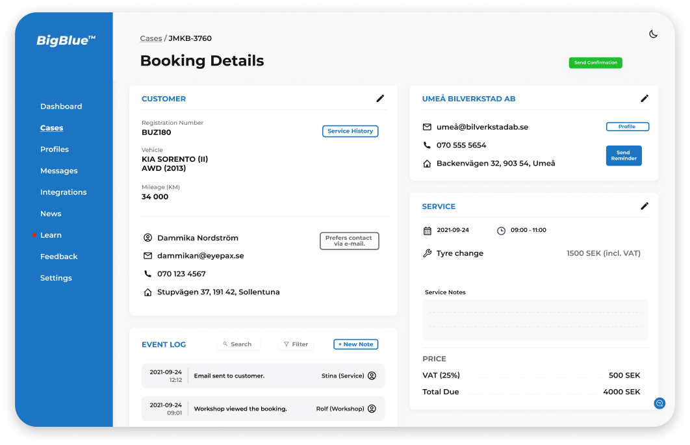

Mekonomen Group is a leading spare parts distributor – number 1 in the market in Denmark, Norway and Sweden. Besides distributing spare parts, they also have 3,600 affiliated workshops offering car repair services. With plans to expand to other markets, MG realize the need for digital transformation in the company as a lot of the work and communication is currently offline, unorganized and scattered. The existing digital booking portal does not sufficiently meet the needs of its users and therefore hinders the shift to a more digital way of working.
To start our project, we headed into reseach. After the inital client meeting we filled in a K-W-L chart to help clarify what we wanted to ask the users. We then conducted interviews (remotely and on site) with workshop mechanics and customer service / quotation team members.
From the users we learned not only frustrating technical aspects of the existing booking portal, but also company culture issues such as the fact that feedback isn’t acknowledged and that communication across the organization is generally lacking. We knew the cultural insights would also be important when developing our final solution.
Once we’d synthesized the user responses into meaningful insights and patterns, and presented this to the client, we generated “How Might We...?” questions to guide us in ideation. As we had been talking to the user, we got a lot of ideas about specific features that should be changed or implemented in the booking portal. To make sure we weren’t too attached to the ideas we had or missing something important, we decided to do an “Negative Brainstorming” exercise with the best HMWs to open up our minds.
Through this exercise we generated a lot of valuable ideas regarding how the booking portal can help combat some of the cultural issues in the organization.
To start our project, we headed into reseach. After the inital client meeting we filled in a K-W-L chart to help clarify what we wanted to ask the users. We then conducted interviews (remotely and on site) with workshop mechanics and customer service / quotation team members.
From the users we learned not only frustrating technical aspects of the existing booking portal, but also company culture issues such as the fact that feedback isn’t acknowledged and that communication across the organization is generally lacking. We knew the cultural insights would also be important when developing our final solution.
We tested the protoype with the user group we initially interviewed, and received an overwhelmingly positive response. I led the user tests in which the user interacted with the prototype while I asked questions and observed, and we also shared a survey for users to complete after the tests in order to collect any reflections they didn’t previously express.
After doing small tweaks based on the feedback, we turned the wireframes into Hi-Fi prototypes with an appealing UI. Our deliverable to the client consisted of the prototype, research insights and recommendations on next steps.